5A
| A/T Description |
This transaxle is an electronically controlled fully automatic transaxle with 6 speeds for forward movement and 1 speed in reverse.
The torque converter is of a 3-element, 1-step and 2-phase type equipped with an automatically controlled lock-up mechanism.
The gear change device consists of a planetary gear unit, a Ravigneaux type planetary gear unit, 3 multiple-disc type clutches, a multiple-disc type brakes, a band brake and a one-way clutch.
The hydraulic pressure control device consists of a valve body assembly, line pressure control solenoid valve (linear solenoid), 4 pressure control solenoid valves (linear solenoid), TCC solenoid valve (linear solenoid), electro magnetic oil pump solenoid valve (ENG A-STOP model) and 2 shift solenoid valves. Optimum line pressure complying with engine torque is produced by the line pressure control solenoid valve in dependence upon control signals from the TCM. This enables the control of the line pressure with high accuracy in accordance with engine power and running conditions to achieve smooth shifting characteristics and high efficiency in power transmission.
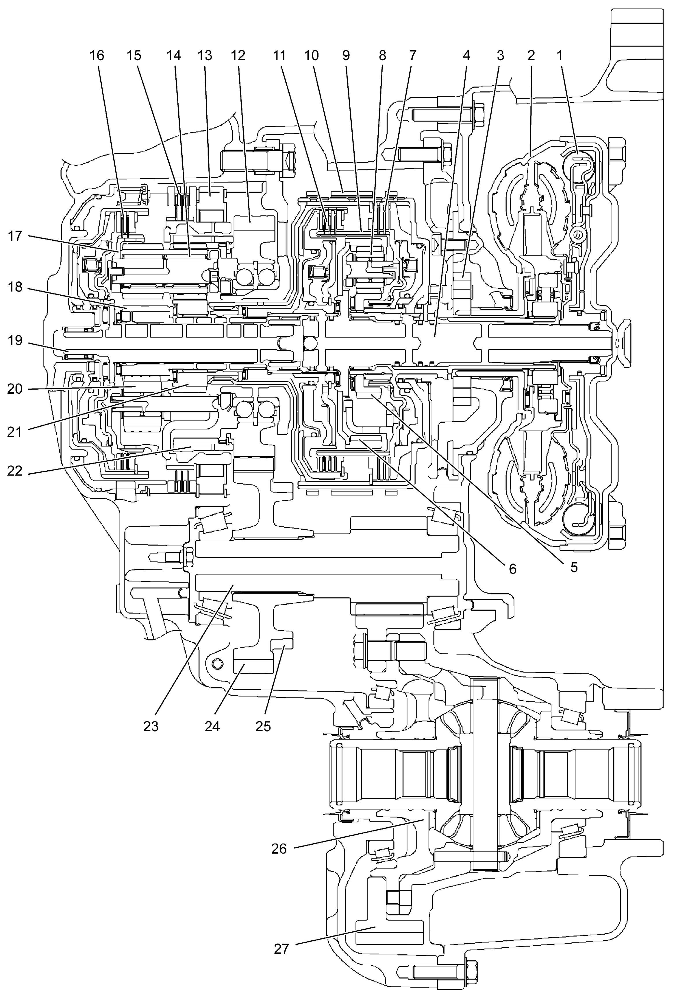
 "Expand image")
| 1. | Torque converter clutch (TCC) | 10. | B1 brake (B1) | 19. | Intermediate shaft |
| 2. | Torque converter | 11. | Forward clutch (C1) | 20. | Rear planetary short pinion gear |
| 3. | Oil pump | 12. | Counter drive gear | 21. | Rear planetary sun gear No.1 |
| 4. | Input shaft | 13. | One-way clutch (F1) | 22. | Rear planetary ring gear |
| 5. | Front planetary sun gear | 14. | Rear planetary long pinion gear | 23. | Countershaft |
| 6. | Front planetary ring gear | 15. | 1st and reverse brake (B2) | 24. | Reduction driven gear |
| 7. | Reverse clutch (C3) | 16. | Direct clutch (C2) | 25. | Parking lock gear |
| 8. | Front planetary pinion gear | 17. | Rear planetary carrier | 26. | Differential case assembly |
| 9. | Front planetary carrier | 18. | Rear planetary sun gear No.2 | 27. | Final gear |
Specifications
| Item | Specifications | ||
|---|---|---|---|
| Torque converter | Type | 3-element, 1-step, 2-phase type (with TCC (lock-up) mechanism) | |
| Stall torque ratio | 1.85 – 2.05 (M16A model) / 2.04 – 2.24 (K14C model) | ||
| Oil pump | Type | Internal involute gear type oil pump (non-crescent type) | |
| Drive system | Engine driven | ||
| Gear change device | Type | Forward 6-step, reverse 1-step planetary gear type | |
| Shift position | P range | Gear in neutral, output shaft fixed, engine start | |
| R range | Reverse | ||
| N range | Gear in neutral, engine start | ||
| D range | Forward 1st ↔ 2nd ↔ 3rd ↔ 4th ↔ 5th ↔ 6th automatic gear change | ||
| M range | Forward 1st ↔ 2nd ↔ 3rd ↔ 4th ↔ 5th ↔ 6th manual gear change | ||
| Gear ratio | 1st | 4.667 (M16A model) / 4.044 (K14C model) | |
| 2nd | 2.533 (M16A model) / 2.371 (K14C model) | ||
| 3rd | 1.556 (M16A model) / 1.556 (K14C model) | ||
| 4th | 1.135 (M16A model) / 1.159 (K14C model) | ||
| 5th | 0.859 (M16A model) / 0.852 (K14C model) | ||
| 6th | 0.686 (M16A model) / 0.672 (K14C model) | ||
| Reverse (reverse gear) | 3.394 (M16A model) / 3.193 (K14C model) | ||
| Number of teeth | Front planetary sun gear | 45 (M16A model) / 45 (K14C model) | |
| Rear planetary sun gear No.1 | 33 (M16A model) / 38 (K14C model) | ||
| Rear planetary sun gear No.2 | 24 (M16A model) / 30 (K14C model) | ||
| Front planetary pinion gear | 17 (M16A model) / 17 (K14C model) | ||
| Rear planetary short pinion gear | 17 (M16A model) / 17 (K14C model) | ||
| Rear planetary long pinion gear | 18 (M16A model) / 20 (K14C model) | ||
| Front planetary ring gear | 81 (M16A model) / 81 (K14C model) | ||
| Rear planetary ring gear | 72 (M16A model) / 78 (K14C model) | ||
| Control elements | Wet type multiple-disc clutch | 3 sets | |
| Wet type multiple-disc brake | 1 set | ||
| Wet type band brake | 1 set | ||
| One-way clutch | 1 set | ||
| Reduction gear ratio | 0.906 (M16A model) / 0.906 (K14C model) | ||
| Final gear reduction ratio | 3.867 (M16A model) / 3.867 (K14C model) | ||
| Lubrication | Lubrication system | Force feed system by oil pump | |
| Cooling | Cooling system | ATF cooler mounted on A/T (water cooling) | |
| Fluid used | SUZUKI AT OIL AW-1 | ||
| ATF capacity | 5.8 liters (12.26/10.21 US/Imp. pt.) (M16A model) / 6.2 liters (13.10/10.91 US/Imp. pt.) (K14C model) | ||
TCM
By using a TCM (1) with an integrated transmission range sensor (2) and simplifying the wire harness, reliability has increased and the number of parts has been reduced. Additionally, by employing a non-contact type (hall IC) transmission range sensor, durability and reliability have increased.
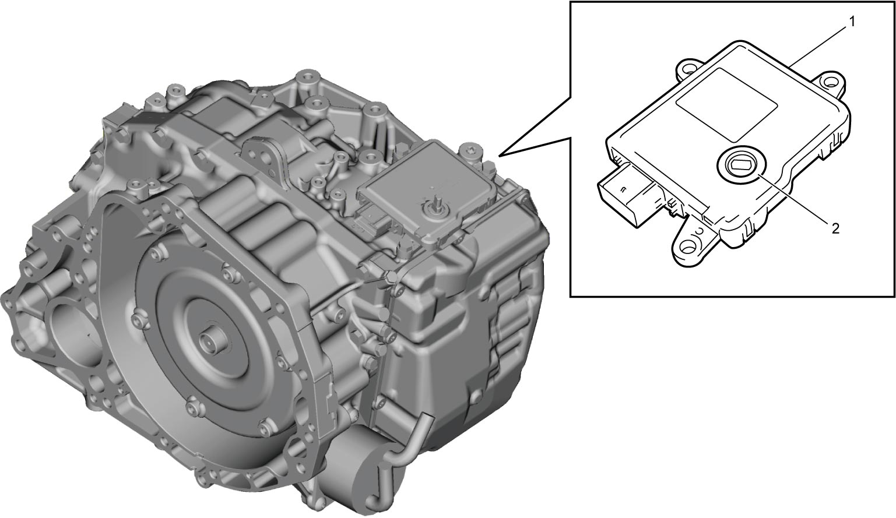
 "Expand image")
Solenoid Harness with ATF Temperature Sensor
The solenoid harness (1) is structured so that 1 connector leads to each of the sensors and the solenoids. The connector of the solenoid harness is directly connected to the TCM (2) without an intermediate harness.
The solenoid harness incorporates the ATF temperature sensor (3) mounted on the valve body.
The ATF temperature sensor senses ATF temperature in the hydraulic circuit directly. A thermistor incorporated in the temperature sensor change its resistance according to the temperature change and the temperature signal is inputted to TCM.
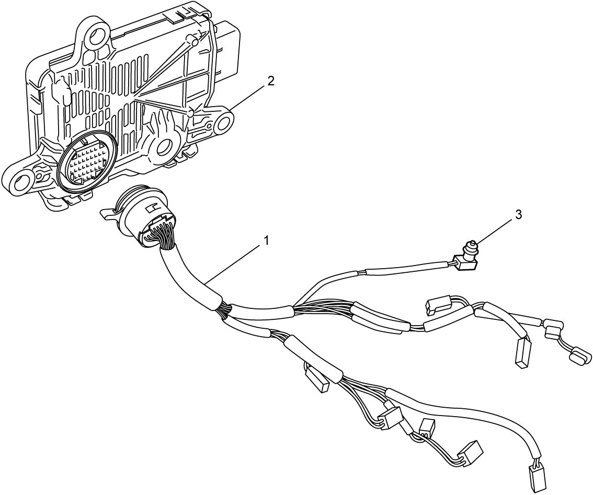
 "Expand image")
ATF Level Detection Mechanism
An overflow type ATF level detection mechanism is employed. This mechanism automatically discharges excess fluid, and does not allow the addition of ATF to a level exceeding the predetermined level during ATF level check, enabling direct and accurate control over the ATF level.
For details on the ATF level inspection and replacement procedures, refer to the ATF Level Check or ATF Change.
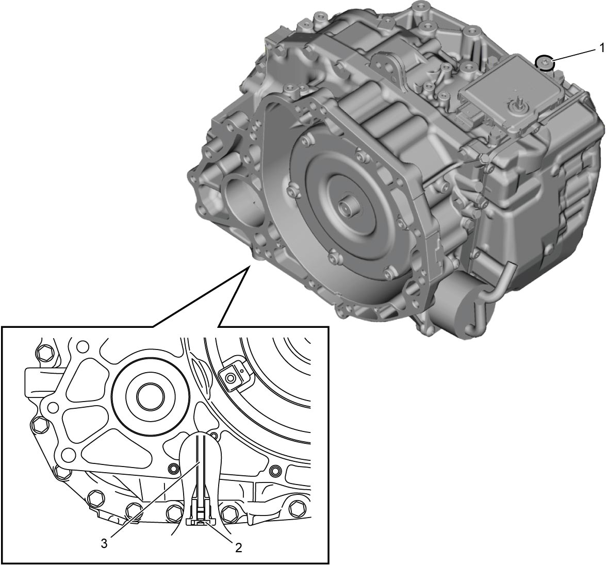
 "Expand image")
| 1. | ATF filler plug | 2. | ATF drain plug | 3. | ATF overflow plug |
Select Lever
A straight type select lever (1) is employed. In addition to P, R, N, and D positions on the select lever, a shift paddle switch allows for the manual selection of the gear position (M position – manual mode).
By pressing the select lever button (2) while the shift lock is released, the select lever can be moved forwards and backwards with the select lever shaft (3) as a pivot.
Additionally, the select lever has a spring (4) which provides a sense of moderation in the operation of the lever.
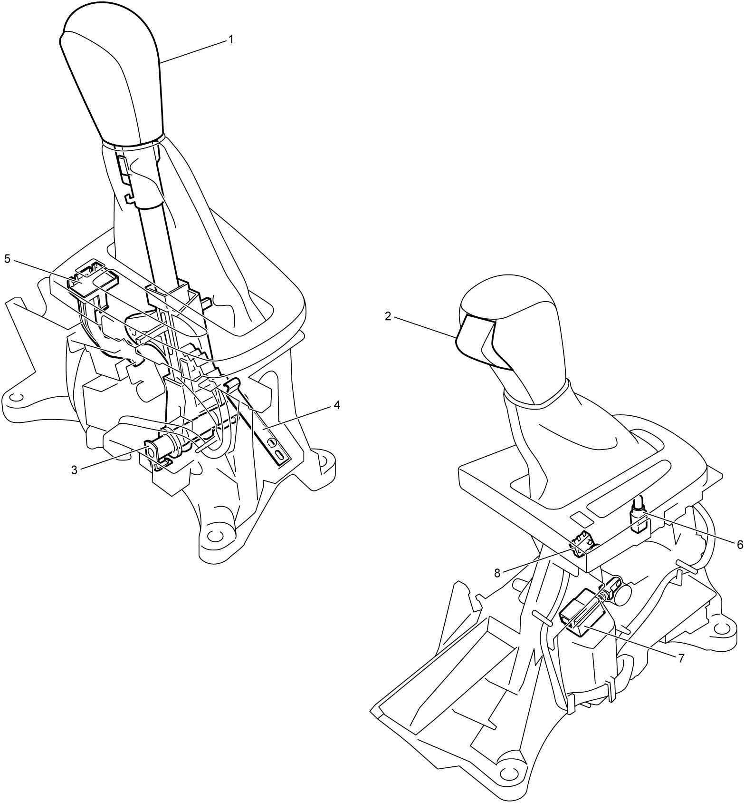
 "Expand image")
| 5. | Shift lock manual release button | 7. | Shift lock solenoid |
| 6. | Select lever illumination light | 8. | P position switch (Keyless push start model) |
Key interlock system (Ignition switch model)
When the select lever (1) is in a position other than P, the key interlock mechanism prevents the ignition key (2) from returning to OFF position to avoid key removal.
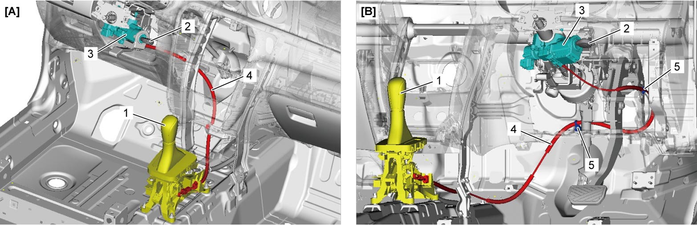
 "Expand image")
| [A]: | LHD model | 3. | Steering lock | 5. | Clamp |
| [B]: | RHD model | 4. | Key interlock cable |
Shift lock system
The select lever has a shift lock function that prevents accidental operation. The ignition must be in the “ON” position and the brake pedal needs to be depressed in order to shift the select lever outside P position.
A/T Mechanical Components
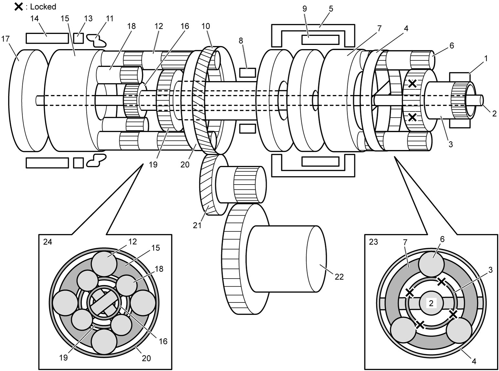
 "Expand image")
| 1. | Oil pump body | 9. | Forward clutch (C1) | 17. | Intermediate shaft |
| 2. | Input shaft | 10. | Counter drive gear | 18. | Rear planetary short pinion gear |
| 3. | Front planetary sun gear | 11. | One-way clutch (F1) | 19. | Rear planetary sun gear No.1 |
| 4. | Front planetary ring gear | 12. | Rear planetary long pinion gear | 20. | Rear planetary ring gear |
| 5. | Reverse clutch (C3) | 13. | 1st and reverse brake (B2) | 21. | Reduction driven gear |
| 6. | Front planetary pinion gear | 14. | Direct clutch (C2) | 22. | Final gear |
| 7. | Front planetary carrier | 15. | Rear planetary carrier | 23. | Front planetary gear unit |
| 8. | B1 brake (B1) | 16. | Rear planetary sun gear No.2 | 24. | Rear planetary gear unit |
Functions
| Part name | Function |
|---|---|
| Forward clutch (C1) | Connects front planetary carrier with rear planetary sun gear No.2 |
| Direct clutch (C2) | Connects intermediate shaft with rear planetary carrier |
| Reverse clutch (C3) | Connects front planetary carrier with rear planetary sun gear No.1 |
| B1 brake (B1) | Fixes rear planetary sun gear No.1 |
| 1st and reverse brake (B2) | Fixes rear planetary carrier |
| One-way clutch (F1) | Prevents rear planetary carrier from turning counterclockwise |
Operation Table of A/T Components
Clutch and brake
| Selector position | Gear position | Part | Condition | |||||
|---|---|---|---|---|---|---|---|---|
| Forward clutch (C1) | Direct clutch (C2) | Reverse clutch (C3) | B1 brake (B1) | 1st and reverse brake (B2) | One-way clutch (F1) | |||
| P | Parking | × | × | × | × |  |
× | |
| R | Reverse | × | × |  |
× | |
× | When vehicle is traveling forwards at 11 km/h (7 mile/h) or less |
| × | × | × | × | × | × | When vehicle is traveling forwards at more than 11 km/h (7 mile/h) | ||
| R ↔ N | × | × | |
× | |
× | ||
| N | Neutral | × | × | × | × | |
× | When vehicle is traveling forwards at 5 km/h (3 mile/h) or less |
| × | × | × | × | × | × | When vehicle is traveling forwards at more than 5 km/h (3 mile/h) | ||
| D, M | 1st | |
× | × | × | |
|
When vehicle is traveling forwards at 5 km/h (3 mile/h) or less |
|
× | × | × | × | |
D range | ||
|
× | × | × | |
|
M range | ||
| 2nd | |
× | × | |
× | × | ||
| 3rd | |
× | |
× | × | × | ||
| 4th | |
|
× | × | × | × | ||
| 5th | × | |
|
× | × | × | ||
| 6th | × | |
× | |
× | × | ||
|
: Applied ×: Released : Controlled |
||||||||
Pressure control solenoid valve, shift solenoid valve and TCC solenoid valve
| Selector position | Gear position | Part | Condition | ||||||
|---|---|---|---|---|---|---|---|---|---|
| Pressure control solenoid valve “A” | Pressure control solenoid valve “B” | Pressure control solenoid valve “C” | Pressure control solenoid valve “D” | Shift solenoid valve “A” | Shift solenoid valve “B” | TCC solenoid valve | |||
| P | Parking | × | × | × | |
|
× | × | |
| R | Reverse | × | × | × | |
× | × | × | When vehicle is traveling forwards at 11 km/h (7 mile/h) or less |
| × | × | × | × | × | |
× | When vehicle is traveling forwards at more than 11 km/h (7 mile/h) | ||
| R ↔ N | — | × | × | |
× | × | × | ||
| N | Neutral | × | × | × | |
|
× | × | When vehicle is traveling forwards at 5 km/h (3 mile/h) or less |
| — | × | × | × | × | × | × | When vehicle is traveling forwards at more than 5 km/h (3 mile/h) | ||
| D, M | 1st | |
× | × | |
|
× | × | When vehicle is traveling forwards at 5 km/h (3 mile/h) or less |
|
× | × | × | |
× | × | D range | ||
|
× | × | |
|
× | × | M range | ||
| 2nd | |
× | |
× | × | |
|
Lock-up ON | |
|
× | |
× | × | |
× | Lock-up OFF | ||
| 3rd | |
× | × | |
× | |
|
Lock-up ON | |
|
× | × | |
× | |
× | Lock-up OFF | ||
| 4th | |
|
× | × | × | × | |
Lock-up ON | |
|
|
× | × | × | × | × | Lock-up OFF | ||
| 5th | × | |
× | |
× | × | |
Lock-up ON | |
| × | |
× | |
× | × | × | Lock-up OFF | ||
| 6th | × | |
|
× | × | × | |
Lock-up ON | |
| × | |
|
× | × | × | × | Lock-up OFF | ||
|
: Operates ×: Does not operate : Controlled |
|||||||||
| Part | Valve status | |
|---|---|---|
| Operates | Does not operate | |
| Pressure control solenoid valve “A” | Open | Closed |
| Pressure control solenoid valve “B” | Open | Closed |
| Pressure control solenoid valve “C” | Open | Closed |
| Pressure control solenoid valve “D” | Open | Closed |
| Shift solenoid valve “A” | Open | Closed |
| Shift solenoid valve “B” | Open | Closed |
| TCC solenoid valve | Open | Closed |
| Line pressure control solenoid valve | Closed | Open |
| Electro magnetic oil pump solenoid valve (ENG A-STOP model) | Open | Closed |
Power Transmission
1st-speed in D and M range
| Part | Condition | ||||||
|---|---|---|---|---|---|---|---|
| C1 | C2 | C3 | B1 | B2 | F1 | ||
| Operation | |
× | × | × | |
|
When vehicle is traveling forwards at 5 km/h (3 mile/h) or less |
|
× | × | × | × | |
D range | |
|
× | × | × | |
|
M range | |
|
: Applied ×: Released : Controlled |
|||||||
Clockwise rotations of the input shaft (1) result in power transmission to the front planetary ring gear (2) as the input shaft and front planetary ring gear are comprised of a single unit.
Clockwise rotations of the front planetary ring gear result in clockwise rotations of the front planetary carrier (6), by rotation or revolution of the front planetary pinion gears (5), as the front planetary sun gear (3) is permanently locked by the oil pump body (4).
Clockwise rotations of the front planetary carrier are transmitted to the rear planetary sun gear No.2 (8) by being connected via the forward clutch (7).
Clockwise rotations of the rear planetary sun gear No.2 result in clockwise rotations of the rear planetary ring gear (13) as the rear planetary short pinion gears (11) rotate counterclockwise and the rear planetary long pinion gears (12) rotate clockwise, because the one-way clutch (10) prevents counterclockwise rotation of the rear planetary carrier (9).
Engine brake (M range)
When the engine speed drops through releasing the accelerator pedal etc., the rear planetary carrier that was prevented from counterclockwise rotation through the operation of the one-way clutch tries to rotate clockwise through the drive force being directed from the tires. However, by fixing the rear planetary carrier into position through the activation of the 1st and reverse brake (14), the drive force from the tires is transmitted to the engine and this results in the engine brake taking effect.
In D range, engine brake is not activated because there is no activation of the 1st and reverse brake.
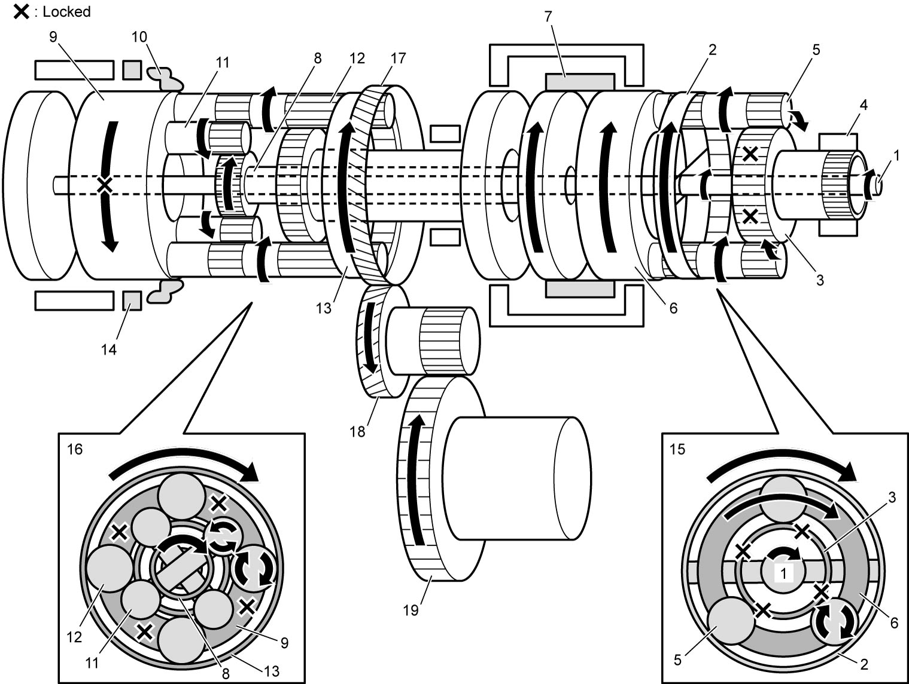
 "Expand image")
| 15. | Front planetary gear unit | 17. | Counter drive gear | 19. | Final gear |
| 16. | Rear planetary gear unit | 18. | Reduction driven gear |
2nd-speed in D range
| Part | Condition | ||||||
|---|---|---|---|---|---|---|---|
| C1 | C2 | C3 | B1 | B2 | F1 | ||
| Operation | |
× | × | |
× | × | |
|
: Applied ×: Released |
|||||||
The input shaft (1) rotates the rear planetary sun gear No.2 (2) clockwise through the same transmission route as 1st-speed in D range.
As the rear planetary sun gear No.1 (4) is locked by B1 brake (3), clockwise rotations of the rear planetary sun gear No.2 result in clockwise rotations of the rear planetary ring gear (7) by causing the rear planetary short pinion gears (5) to rotate counterclockwise, the rear planetary long pinion gears (6) to rotate clockwise, and the rear planetary short pinion gears and rear planetary long pinion gears to revolve clockwise around the rear planetary sun gear No.2 and the rear planetary sun gear No.1 respectively.
 "Expand image")
| 8. | Front planetary gear unit | 10. | Counter drive gear | 12. | Final gear |
| 9. | Rear planetary gear unit | 11. | Reduction driven gear |
3rd-speed in D range
| Part | Condition | ||||||
|---|---|---|---|---|---|---|---|
| C1 | C2 | C3 | B1 | B2 | F1 | ||
| Operation | |
× | |
× | × | × | |
|
: Applied ×: Released |
|||||||
The input shaft (1) rotates the front planetary carrier (2) clockwise through the same transmission route as 1st-speed in D range.
Clockwise rotations of the front planetary carrier will result in power transmission to the rear planetary sun gear No.2 (5) and rear planetary sun gear No.1 (6) via the forward clutch (3) and the reverse clutch (4) respectively.
Clockwise rotations of the rear planetary sun gear No.2 and rear planetary sun gear No.1 will cause the rear planetary short pinion gears (7) and rear planetary long pinion gears (8) to rotate counterclockwise. However, because the rear planetary short pinion gears and rear planetary long pinion gears are meshed with each other, the difference in the direction of rotation causes both pinion gears to be locked to each other. As a result, the clockwise rotations of the rear planetary sun gear No.2 and rear planetary sun gear No.1 will cause the rear planetary ring gear (10) to rotate clockwise through rotating the whole rear planetary gear unit (9) clockwise.
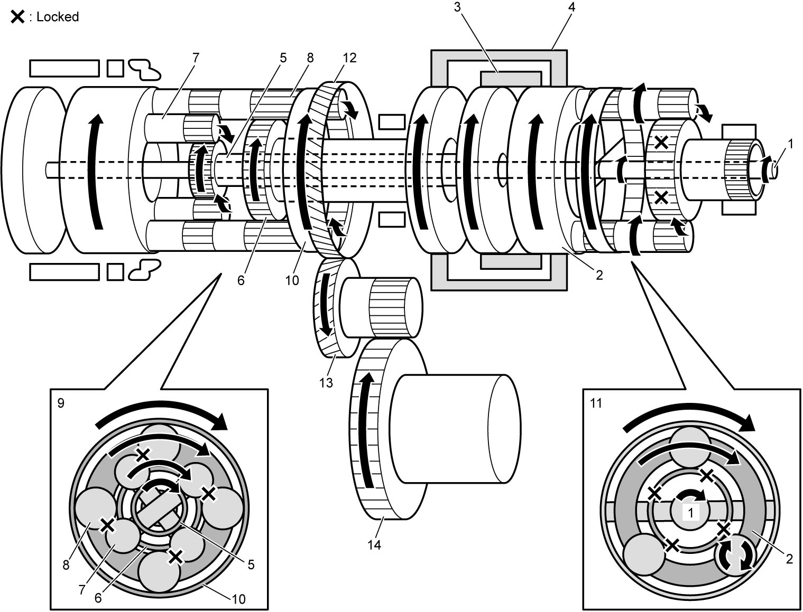
 "Expand image")
| 11. | Front planetary gear unit | 13. | Reduction driven gear |
| 12. | Counter drive gear | 14. | Final gear |
4th-speed in D range
| Part | Condition | ||||||
|---|---|---|---|---|---|---|---|
| C1 | C2 | C3 | B1 | B2 | F1 | ||
| Operation | |
|
× | × | × | × | |
|
: Applied ×: Released |
|||||||
The input shaft (1) rotates the rear planetary sun gear No.2 (2) clockwise through the same transmission route as 1st-speed in D range.
Additionally, when the input shaft rotates clockwise, the power is transmitted at the same speed of rotations and in the same direction to the intermediate shaft (3). By engaging the direct clutch (4), the rear planetary carrier (5) rotates clockwise.
The rear planetary short pinion gears (6) receive the rotational force from both the rear planetary sun gear No.2 and the rear planetary carrier, but because the rear planetary carrier rotation speed is faster than the rear planetary sun gear No.2 rotation speed, the rear planetary short pinion gears rotate clockwise and revolve around the rear planetary sun gear No.2 clockwise.
As a result, the rear planetary long pinion gears (7) rotate counterclockwise and revolve around the rear planetary sun gear No.1 (8) clockwise, rotating the rear planetary ring gear (9) clockwise.
The rotation speed of the rear planetary ring gear are the result of subtracting the counterclockwise rotation speed of the rear planetary long pinion gears from clockwise rotation speed of the rear planetary carrier, causing the rotation speed of the rear planetary ring gear to be less than those of the rear planetary carrier.
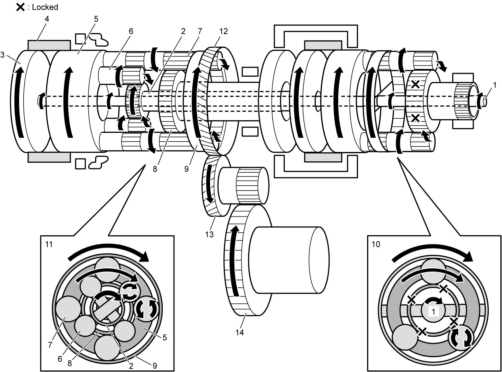
 "Expand image")
| 10. | Front planetary gear unit | 12. | Counter drive gear | 14. | Final gear |
| 11. | Rear planetary gear unit | 13. | Reduction driven gear |
5th-speed in D range
| Part | Condition | ||||||
|---|---|---|---|---|---|---|---|
| C1 | C2 | C3 | B1 | B2 | F1 | ||
| Operation | × | |
|
× | × | × | |
|
: Applied ×: Released |
|||||||
The input shaft (1) rotates the front planetary carrier (2) clockwise through the same transmission route as 1st-speed in D range.
Clockwise rotations of the front planetary carrier rotate the rear planetary sun gear No.1 (4) clockwise by engaging the reverse clutch (3).
Additionally, when the input shaft rotates clockwise, the power is transmitted at the same speed of rotations and in the same direction to the intermediate shaft (5). By engaging the direct clutch (6), the rear planetary carrier (7) rotates clockwise.
The rear planetary long pinion gears (8) receive the rotational force from the rear planetary sun gear No.1 and rear planetary carrier. As the rotation speed of the rear planetary carrier is higher than that of the rear planetary sun gear No.1, the rear planetary long pinion gears rotate clockwise and revolve around the rear planetary sun gear No.1 clockwise.
As a result, the rear planetary long pinion gears cause the rear planetary ring gear (9) to rotate clockwise.
The rotation speed of the rear planetary ring gear is higher than that of the rear planetary carrier, as the clockwise rotation speed of the rear planetary long pinion gears is added to that of the rear planetary carrier.
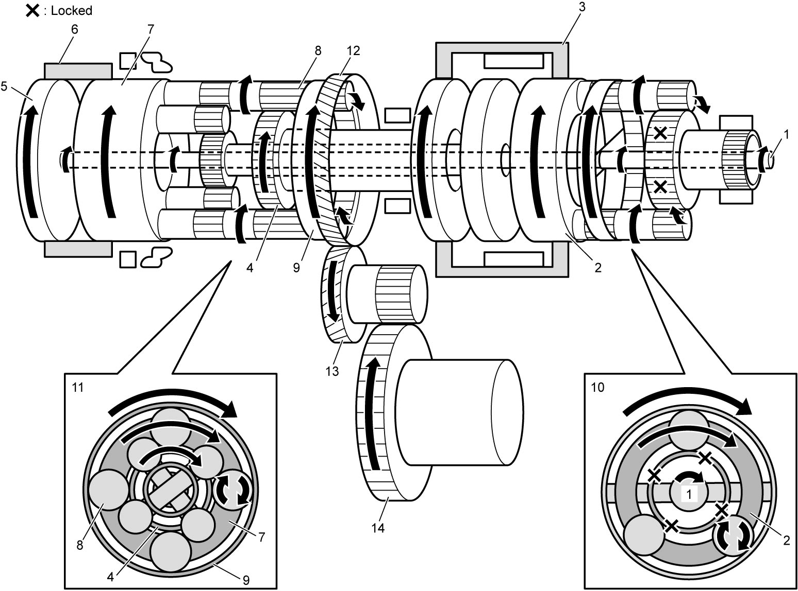
 "Expand image")
| 10. | Front planetary gear unit | 12. | Counter drive gear | 14. | Final gear |
| 11. | Rear planetary gear unit | 13. | Reduction driven gear |
6th-speed in D range
| Part | Condition | ||||||
|---|---|---|---|---|---|---|---|
| C1 | C2 | C3 | B1 | B2 | F1 | ||
| Operation | × | |
× | |
× | × | |
|
: Applied ×: Released |
|||||||
When the input shaft (1) rotates clockwise, the power is transmitted at the same speed of rotation and in the same direction to the intermediate shaft (2) and to the rear planetary carrier (4) by engaging the direct clutch (3).
As the rear planetary sun gear No.1 (6) is locked by B1 brake (5), clockwise rotations of the rear planetary carrier result in clockwise rotations of the rear planetary ring gear (8) by causing the rear planetary long pinion gears (7) to rotate clockwise and revolve around the rear planetary sun gear No.1.
As the rear planetary sun gear No.1 is locked, the rotation speed of the rear planetary long pinion gears around the rear planetary sun gear No.1 is higher than that in the 5th-speed in D range.
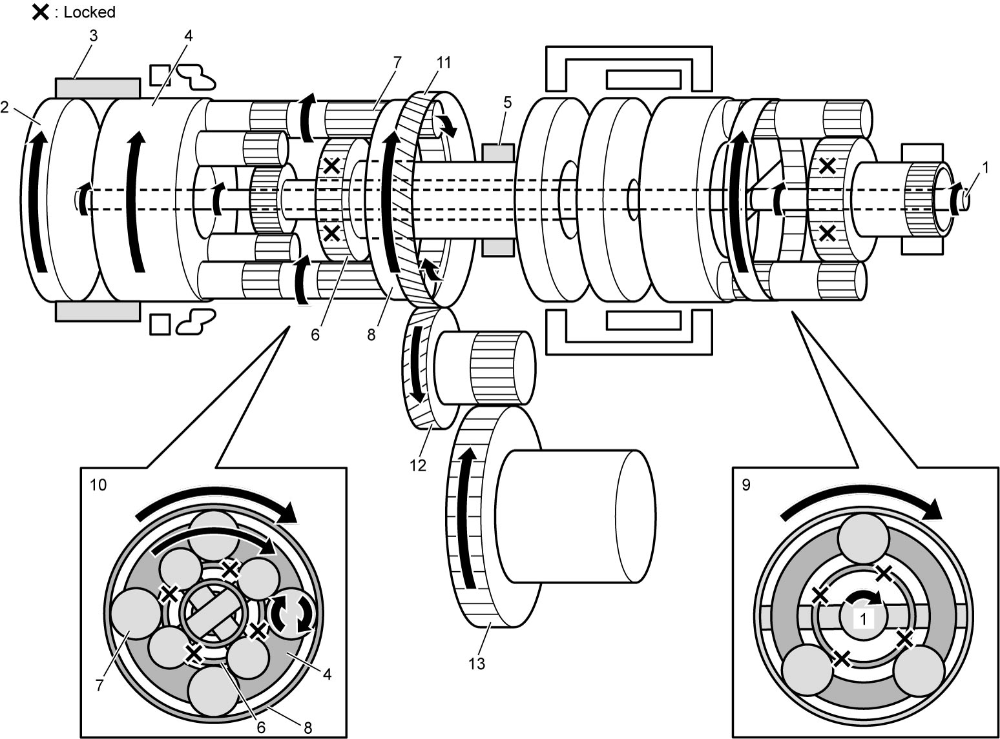
 "Expand image")
| 9. | Front planetary gear unit | 11. | Counter drive gear | 13. | Final gear |
| 10. | Rear planetary gear unit | 12. | Reduction driven gear |
R range
| Part | Condition | ||||||
|---|---|---|---|---|---|---|---|
| C1 | C2 | C3 | B1 | B2 | F1 | ||
| Operation | × | × | |
× | |
× | When vehicle is traveling forwards at 11 km/h (7 mile/h) or less |
| × | × | × | × | × | × | When vehicle is traveling forwards at more than 11 km/h (7 mile/h) | |
|
: Applied ×: Released |
|||||||
The input shaft (1) rotates the front planetary carrier (2) clockwise through the same transmission route as 1st-speed in D range.
Clockwise rotations of the front planetary carrier are transmitted to the rear planetary sun gear No.1 (4) engaging the reverse clutch (3).
Clockwise rotations of the rear planetary sun gear No.1 rotates the rear planetary ring gear (8) counterclockwise by rotating the rear planetary long pinion gears (7) counterclockwise, as the rear planetary carrier (5) is locked by the 1st and reverse brake (6).
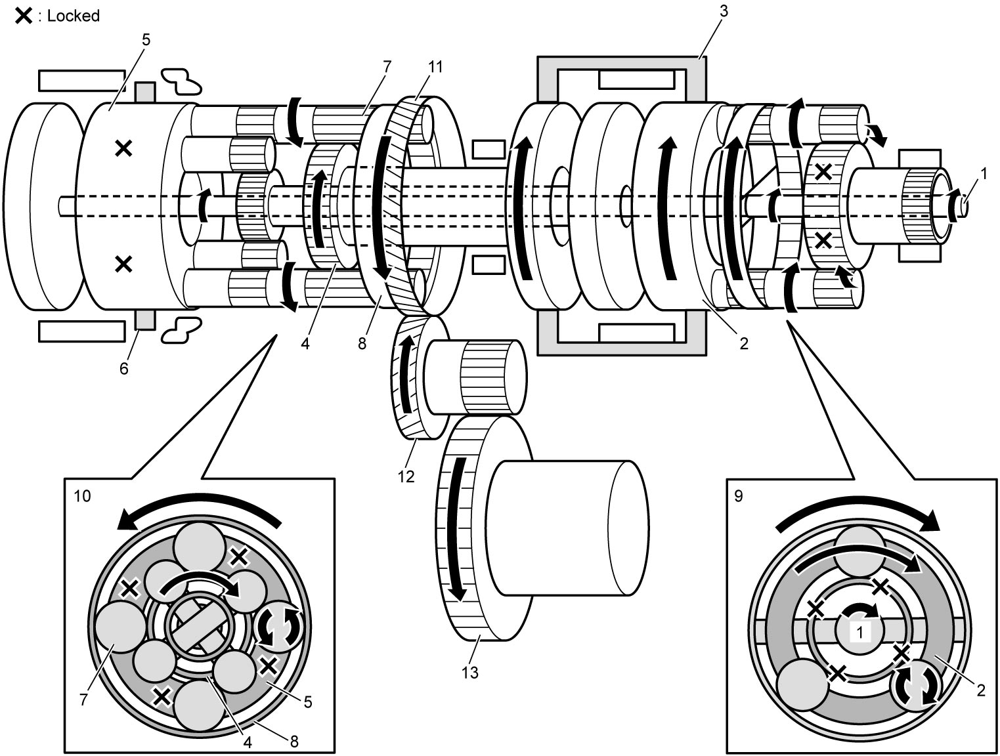
 "Expand image")
| 9. | Front planetary gear unit | 11. | Counter drive gear | 13. | Final gear |
| 10. | Rear planetary gear unit | 12. | Reduction driven gear |
A/T Control Description
Lock-up control
When the vehicle speed exceeds the specified value, the TCC solenoid valve fully engages the TCC upon receiving control signals from the TCM. This control helps improve power transmission efficiency.
Slip controlled lock-up function
Even at a lower speed than when the TCC is completely engaged, control over the TCC solenoid valve causes the TCC to slip (to be engaged partially), improving power transmission efficiency. While such slip control is being executed, the fluid pressure applied to the TCC is controlled by the TCC solenoid valve so that the difference between the engine speed and the input shaft speed becomes close to the specified value.
Also, during deceleration, the TCC is made to slip (be engaged slightly) to raise the engine speed and enlarge the fuel cut operation range so that fuel consumption is reduced.
Due to this reason, it is absolutely necessary for the A/T to use ATF suitable for slip control. Use of any fluid other than the specified ATF may cause juddering or other faulty conditions to occur.
Reverse control
In the reverse control, if the shift lever is shifted to R range while the vehicle is running forward, the TCM prevents shifting to reverse to protect internal A/T parts from becoming damaged.
Garage shift control
The garage shift control controls gear shifting to D or R range from N range while vehicle is standstill. The line pressure applied to the forward clutch or the reverse clutch is adjusted to reduce shift shock.
Manual mode control
When the select lever is shifted to M range, or when the shift paddle switch is operated with the select lever in D range, the TCM switches the control mode from automatic to manual mode, while maintaining the actual gear position. In manual mode, every time the paddle-up or paddle-down switch is operated, the TCM selects the gear position from 1st to 6th-speed, and shifts up or down depending on the vehicle speed.
Slope shift control
TCM distinguishes uphill or downhill according to vehicle speed, accelerator pedal position and/or brake pedal position, and controls gear ratio as follows:
•Uphill: To improve acceleration, gear ratio in the high speed range is limited.
•Downhill: To obtain effective engine brakes, gear ratio is downshifted.
•Downhill: To obtain effective engine brakes, gear ratio is downshifted.
Engine speed control
In the engine speed control, the engine speed is adjusted during shifting to reduce shift shock.
Adaptive shift control
In the adaptive shift control, a suitable driving mode is automatically selected according to the driving condition during normal driving.
Multiplex shift control
In the multiplex shift control, when the gear shift control is activated, the previous command is cancelled and the gear shift control is performed based on the newly received command, if a new command is being sent due to a change in the vehicle speed or accelerator position.
Start-lock control
The start-lock control prevents the engine from being started.
Engine auto stop and start control (ENG A-STOP model)
During engine auto stop operation, electro magnetic oil pump solenoid valve opens the hydraulic circuit for forward clutch (C1) before the engine automatic restart, to engage the clutch smoothly when restarting the engine, reducing a shift shock.
Electronic Shift Control System Input / Output Table
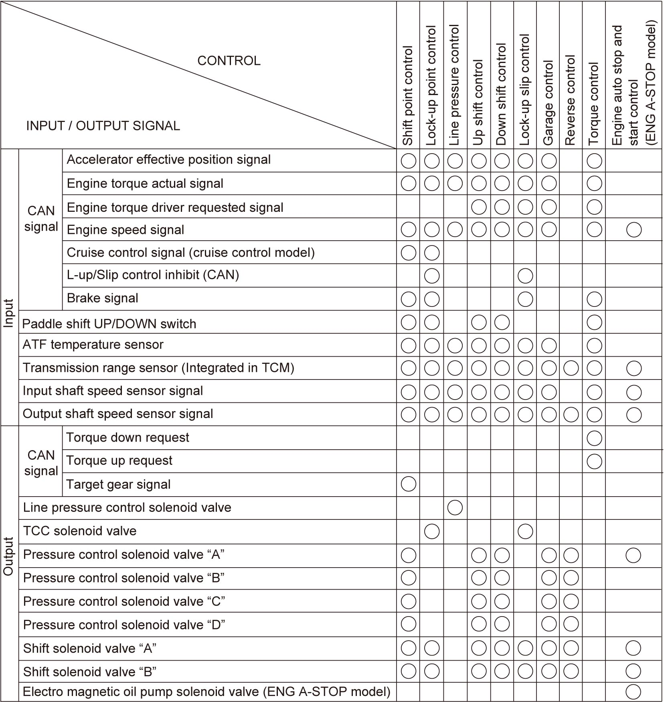
 "Expand image")